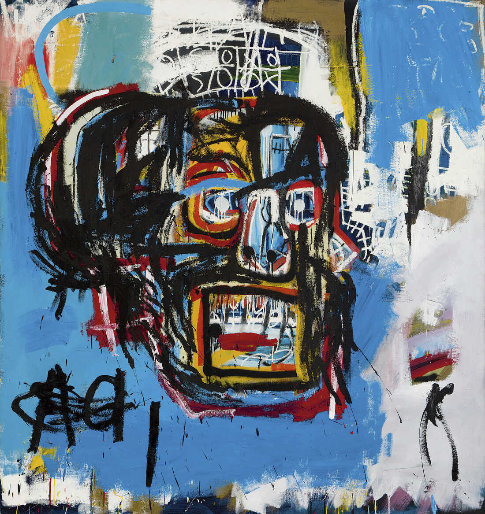
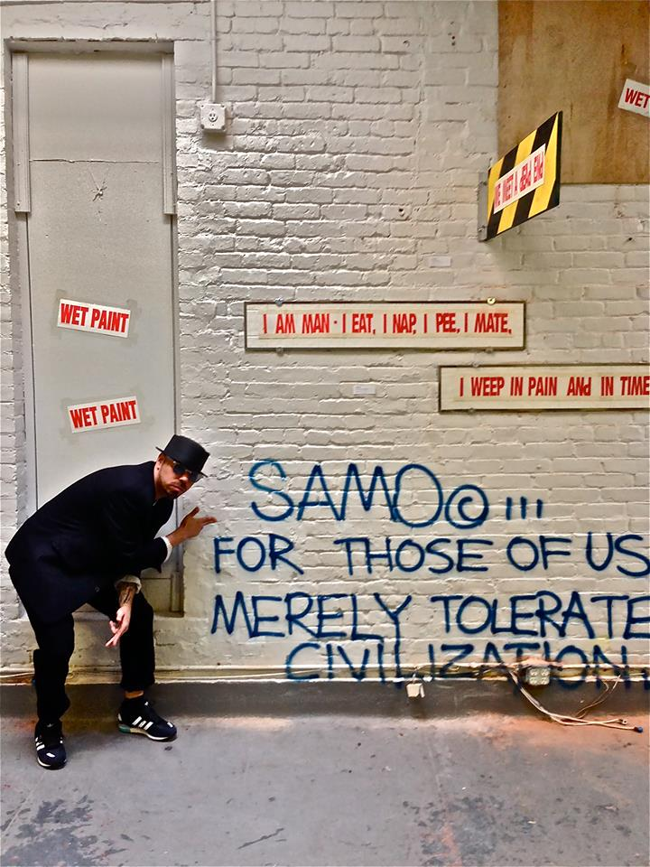

Jean-Michel Basquiat (1985) Photogrpahed by Evelyn Hofer
A driven and ambitious artist of 1970's New York City, depicted identity and oppression in his art facing challenges as a young, black man. Basquiat spent his childhood and adolescence formulating his unique art style that would later on influence millions. Although his parents helped open the world of art to him, it was arguably a medical encyclopedia book that exerted the most powerful influence on his art.
"Untitled" (1982)
In the same year, Basquiat and his best friend, Al Diaz, spray-painted cryptic statements and symbols all over Lower Manhattan working under the name SAMO, short for “same old”. It caught attention quickly. It was their way of calling out the predominantly white corporate art world that Basquiat felt like he could not break into simply because of his background.
Fellow artist and friend Al Diaz